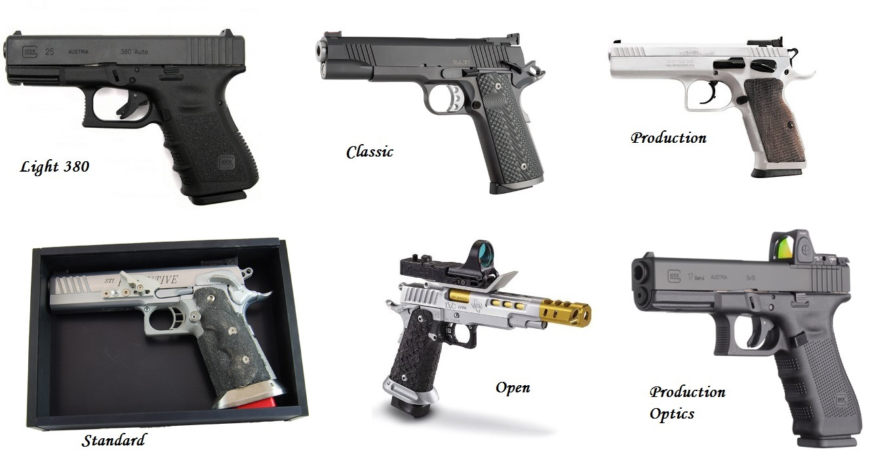

No Brasil, o IPSC (International Pratical Shooting Confederation) está consolidado desde a década de 80 e hoje a CBTP (Confederação Brasileira de Tiro Prático) e suas Federações, promovem competições muito bem organizadas em todo o país.
Com a chegada do IDSC (International Defensive Shooting Confederation) em meados de 2012, a modalidade está cada vez mais pulverizada no país. A CBTD (Confederação Brasileira de Tiro Defensivo e Caça) possui um modelo de gestão centralizada, o que dispensa as Federações Intermediárias. Assim, Clubes de Tiro por todo o Brasil podem promover suas próprias competições e, devido ao custo consideravelmente menor, o IDSC vem conquistando cada vez mais atletas.
Daí vem a dúvida. Qual é melhor? O que praticar? IPSC ou IDSC?
Embora ambas sejam modalidades de tiro dinâmico, onde o atleta precisa se deslocar ao longo um circuito alvejando os alvos no menor tempo possível, na prática, o IPSC e o IDSC são bem diferentes tanto nos regulamentos quanto na dinâmica do jogo.
